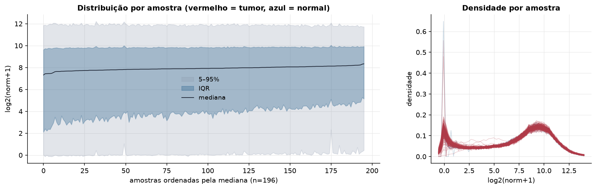
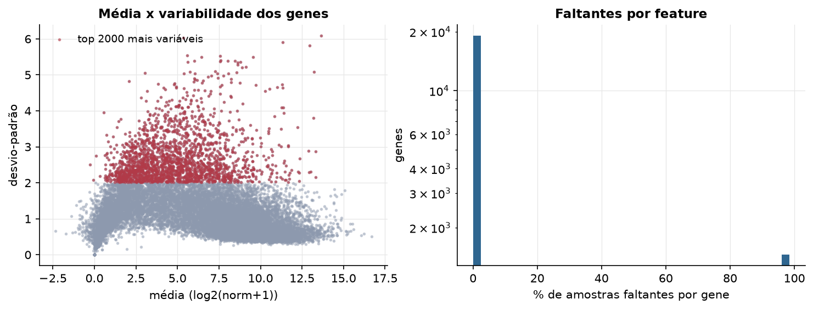
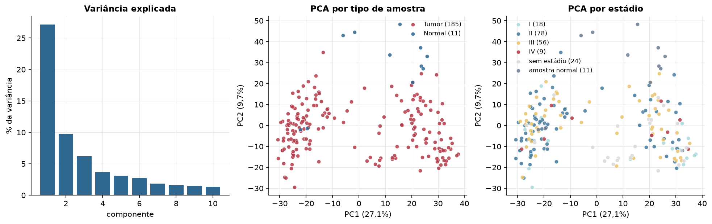
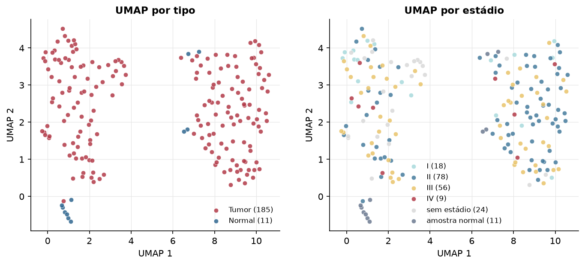
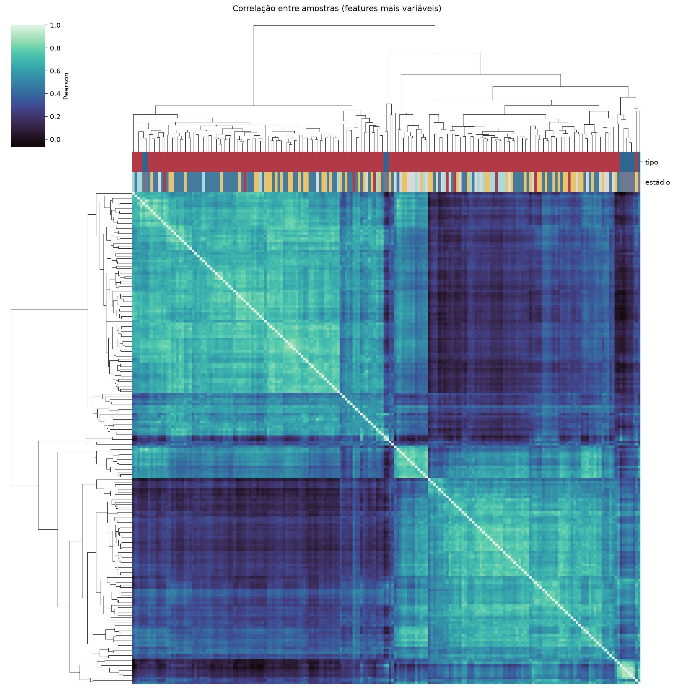
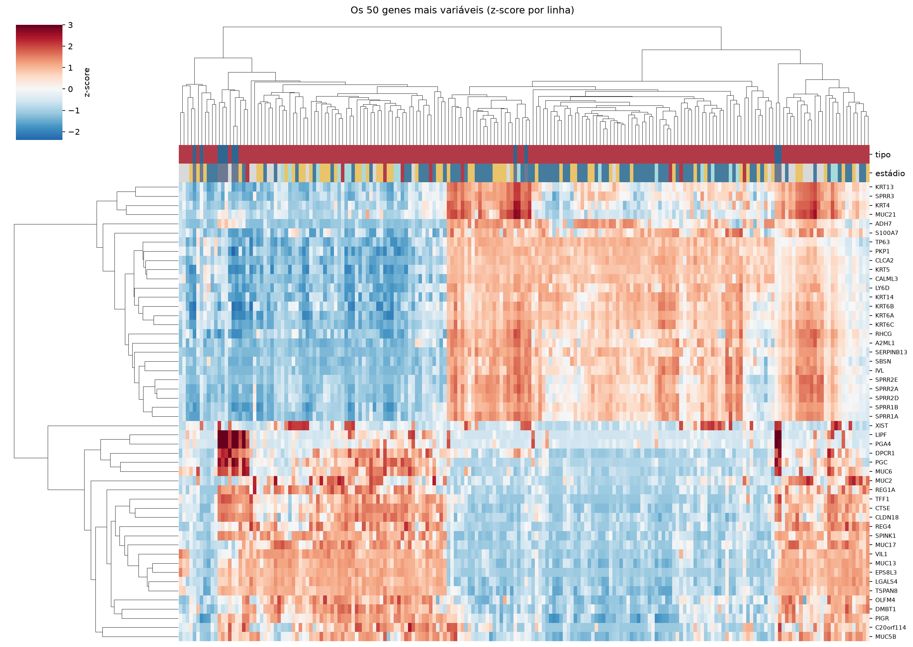
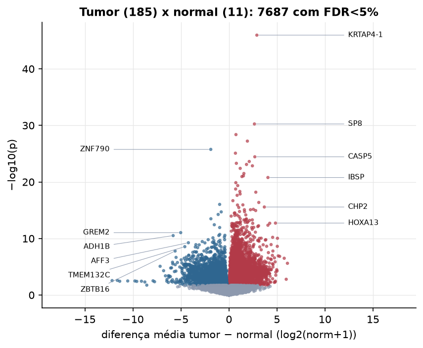
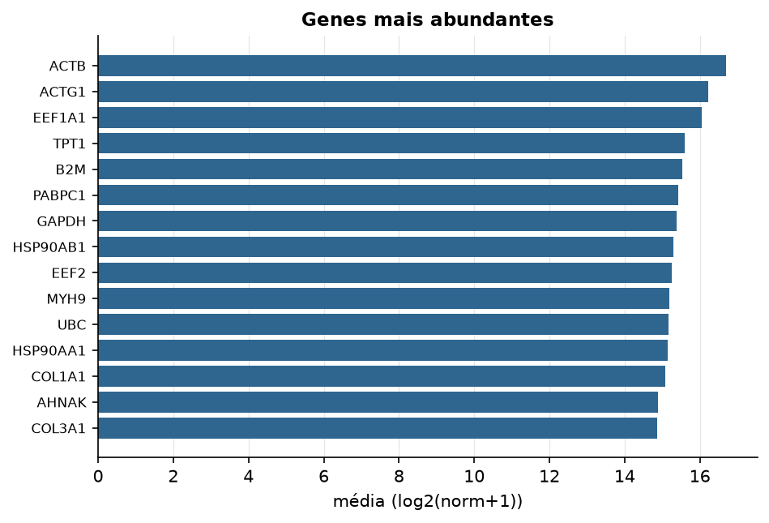

ESCA · RNA-seq (PanCanAtlas)
Illumina HiSeq, RSEM normalizado e corrigido por lote (EB++), log2(x+1) · gerado em 21/10/2026 21:02
20.531genes
185amostras tumorais
11amostras normais
7,0%valores faltantes
Fonte: PanCanAtlas EB++ via API do Xena
Estes valores já vêm normalizados e com correção de lote entre plataformas e centros. Servem bem para modelos gaussianos ou redes neurais; para um modelo de contagem use as contagens brutas do GDC.
Principais resultados
- 20.531 genes medidos em 196 amostras (185 tumorais e 11 normais); 7,0% dos valores estão faltando.
- Os dois primeiros componentes principais explicam 27,1% e 9,7% da variância das features mais variáveis.
- Correlação mediana entre amostras: 0,44.
- Tumor x normal: 7687 genes diferentes com FDR < 5% (4497 maiores no tumor, 3190 maiores no normal; 11 pacientes têm o par tumor-normal).
- Mais aumentados no tumor: KRTAP4-1, SP8, C15orf53, TAS2R38, LOC284632, CASP5, TINAG, RXFP3.
- Mais reduzidos no tumor: ZNF790, EGFL8, ATP9B, CPEB2, MAOA, ZC4H2, WDR31, GREM2.
- Associações clínicas com p < 0,05 nos componentes principais: PC1 com estádio (p=0.0092); PC2 com estádio (p=0.018); PC1 com idade (p=2.8e-06).
- Em mediana, 81,6% dos genes têm expressão acima de log2(norm+1)=1 em cada amostra.
Distribuição dos valores


Estrutura das amostras




Tumor x normal

Features mais diferentes entre tumor e normal
| diferenca_tumor_menos_normal | t | p | fdr | |
|---|---|---|---|---|
| KRTAP4-1 | 2.908 | 19.227 | 1.09e-46 | 2.07e-42 |
| SP8 | 2.655 | 14.959 | 5.54e-31 | 5.29e-27 |
| C15orf53 | 0.731 | 13.424 | 4.19e-29 | 2.67e-25 |
| TAS2R38 | 1.922 | 14.921 | 5.99e-28 | 2.86e-24 |
| ZNF790 | -1.891 | -14.723 | 1.74e-26 | 6.65e-23 |
| LOC284632 | 0.677 | 12.3 | 8.19e-26 | 2.6e-22 |
| CASP5 | 2.695 | 14.704 | 3.56e-25 | 9.71e-22 |
| TINAG | 2.115 | 11.728 | 2.4e-24 | 5.73e-21 |
| RXFP3 | 0.773 | 11.734 | 5.06e-24 | 1.07e-20 |
| SLCO1B1 | 1.83 | 11.822 | 8.01e-24 | 1.53e-20 |
| CSAG2 | 2.443 | 11.472 | 1.4e-23 | 2.43e-20 |
| STOML3 | 1.173 | 11.39 | 3.96e-23 | 6.29e-20 |
| STAT1 | 1.557 | 17.404 | 3.21e-22 | 4.7e-19 |
| IL17A | 1.508 | 11.35 | 8.38e-22 | 1.14e-18 |
| CGB5 | 1.352 | 10.862 | 1.11e-21 | 1.42e-18 |
| IBSP | 4.061 | 20.485 | 1.64e-21 | 1.96e-18 |
| OR5M11 | 0.718 | 10.463 | 1.34e-20 | 1.51e-17 |
| IL17F | 0.918 | 10.324 | 4.4e-20 | 4.66e-17 |
| KRTAP5-4 | 0.698 | 10.081 | 1.78e-19 | 1.79e-16 |
| CGB | 1.137 | 9.978 | 4.85e-19 | 4.63e-16 |
| CSAG3 | 2.798 | 11.206 | 6.47e-19 | 5.88e-16 |
| CGB8 | 1.165 | 9.845 | 1.34e-18 | 1.16e-15 |
| HOXB1 | 0.852 | 9.95 | 2.32e-18 | 1.93e-15 |
| PPHLN1 | 0.413 | 11.647 | 2.05e-17 | 1.63e-14 |
| SI | 3.11 | 9.281 | 4.24e-17 | 3.23e-14 |
| EGFL8 | -0.968 | -10.465 | 9.29e-17 | 6.81e-14 |
| ZNF280A | 1.452 | 9.751 | 1.13e-16 | 8e-14 |
| DDX27 | 0.89 | 16.132 | 1.2e-16 | 8.2e-14 |
| CHP2 | 3.687 | 12.449 | 2.69e-16 | 1.77e-13 |
| ATIC | 1.024 | 15.519 | 3.29e-16 | 2.09e-13 |
Associação com variáveis clínicas
p-valores da associação dos três primeiros componentes principais (só tumores) com estádio (Kruskal-Wallis), sexo (Mann-Whitney), idade (Spearman) e sobrevida global (Cox univariado).
| estádio (Kruskal) | sexo (Mann-Whitney) | idade (Spearman) | sobrevida OS (Cox) | |
|---|---|---|---|---|
| PC1 (28,2%) | 0.009 | 0.864 | 2.75e-06 | 0.822 |
| PC2 (8,3%) | 0.018 | 0.742 | 0.357 | 0.971 |
| PC3 (6,1%) | 0.86 | 0.491 | 0.079 | 0.998 |
Mais abundantes
